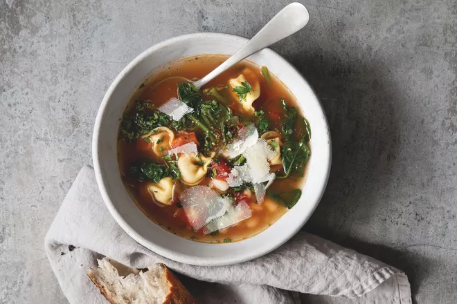

Tortellini Soup Recipe

Description
This is a quick and easy all-in-one dinner. It can easily be customized depending on the ingredients you have.
Ingredients
- 1 tablespoon unsalted butter
- 1 tablespoon minced garlic
- 6 cups (1 1/2 quarts) chicken broth
- 1 teaspoon (14 1/2-ounce) can diced fire-roasted tomatoes
- 1/2 teaspoon Italian seasoning
- 1 (9-ounce) package cheese tortellini
- 1 (14 1/2-ounce) can cannellini beans, rinsed well and drained
- 6 cups baby spinach
- 2 tablespoons chopped fresh parsley
- 2 tablespoons chopped fresh basil
- Kosher salt and freshly ground black pepper
- Juice of ½ lemon
- 1 cup shaved Parmesan cheese (about 4 ounces)
- 1 loaf French bread, for serving
Steps
- In a large soup pot, melt the butter over medium-high heat. Add the onion and garlic and sauté,
stirring constantly, until the onion is soft and tender, 3 to 4 minutes.
- Add the broth, tomatoes, and Italian seasoning and bring to a rolling boil.
Add the tortellini and beans and cook until the tortellini are cooked through,
about 2 minutes.
- Reduce the heat to medium and add the spinach, parsley, basil, and salt and pepper to taste
and stir until the spinach is just wilted, 1 to 2 minutes. Squeeze the lemon juice over the soup.
- Ladle into bowls, sprinkle with the Parmesan, and serve immediately with torn bread for dipping.
- Store in an airtight container in the refrigerator for 3 to 4 days or in the freezer for up to 2 months.
Let the soup thaw before reheating.
If you want to see the original recipe click here.